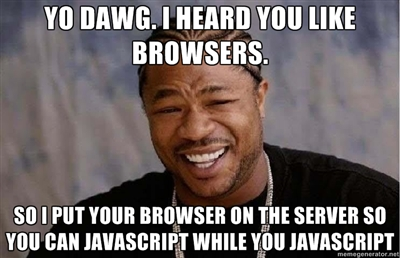
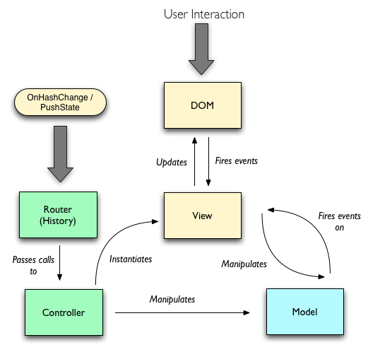
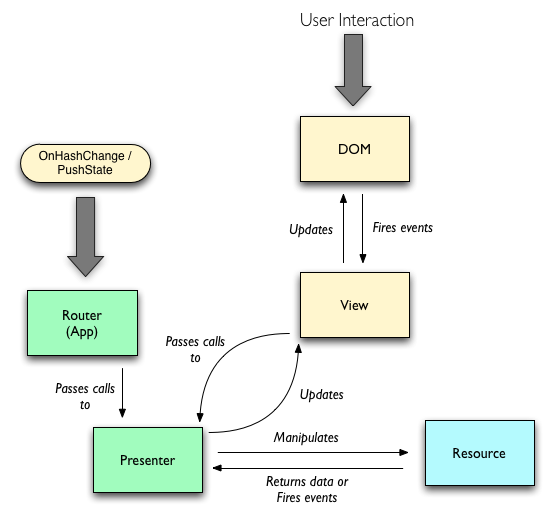
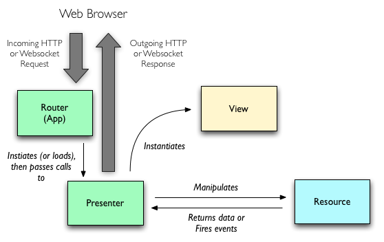

Scaling Isomorphic Javascript Code

Build the best tools and the best systems will follow.
A full-stack web application development framework which packages these tools together to make isomorphic and stream-based application development easier.
require('flatiron').concerns;
-
Reusability / Portability.
-
Decoupling.
-
Extensibility.
-
Isomorphism.
require('isomorphic');
Code is said to be Isomorphic if it is possible to execute its API both on the server and in a browser.
require('isomorphic').requirements;
-
Is the view ephemeral (e.g. on the server) or long-lived (e.g. in the browser)?
-
Is the view reusable across different use-cases or scenarios?
-
Should the view be annotated with application-specific tags or markup?
-
Where should the bulk of the business logic reside? (in the model? in the controller?)
-
How is the application state persisted or accessed? (i.e. AJAX or Websockets?)
require('design-patterns').mvc;

Model-View-Controller
require('design-patterns').model2;

Model2
require('frameworks').backbone;

Model-View-Controller (from Backbone.js)
require('frameworks').rubyonrails;

Model2 (from Ruby on Rails)
require('rvp').client;

Resource-View-Presenter (on the Client)
require('rvp').server;

Resource-View-Presenter (on the Server)
require('rvp').events;
var app = require('flatiron').app;
app.on('some:namespaced:thing', function (arg1, arg2) {
//
// You application is a proxy for your models and views
// to communicate through.
//
});
app.emit('some:namespaced:thing', 'anywhere', 'in your app');
require('rvp').choices;
-
Decouple the Model and View
-
Expect a thin View, and a heavy Presenter and Resource.
-
Prefer business logic in the Resource over the Presenter.
-
Allow for both ephemeral (i.e. static server-side views) and persistent Views (i.e. the DOM).
-
Prefer a Presenter over a ViewModel to preserve the purity of the Markup (i.e. HTML).
-
Assume a persistent Presenter and Model.
So we know what Isomorphic code is and why it's important.
But how do we make writing Isomorphic Javascript easy?
-
(Sorry Internet Explorer 8 and below)
-
(And that there is no silver bullet)
require('isomorphic').recognize;
//
// What's wrong with this?
//
var fs = require('fs'),
request = require('request');
function uploadSomething() {
fs.createReadStream('./some-file.mp4').pipe(
request.post('http://my-awesome-website.com/upload')
);
}
We're working on it everyday. I promise.
require('open-source');
This presentation is Open Source software.
-
All software is available under the MIT license.
-
All content is available under Creative Commons Share-Alike no-attribution commercial ok.
-
Special thanks to Deck.js for making a killer open-source front-end: http://imakewebthings.github.com/deck.js
←
→
/
#